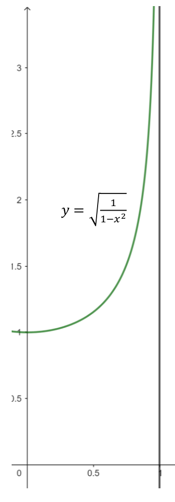
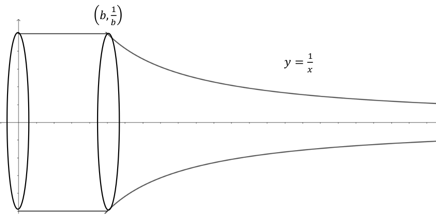

Section8.8Homework #13: Escape Velocity and Improper Integrals
Many people have heard the term “escape velocity”. A quick look on the internet says that the escape velocity from the surface of the earth is approximately \(11.2
\frac{\text{km}}{\text{second}} \)or about \(33\) times the speed of sound. What does this mean and where did such a number come from? The key is our discovery that work can be obtained by looking at the change in kinetic energy. This also affords us a chance to delve into a new topic: improper integrals.
First, we all know that if you throw a ball into the air, then it will go up and come back down. We actually showed in Differential Calculus: Practice Before Theorythat, ignoring air resistance, if you throw a ball up with an initial velocity of \(v_0\frac{\text{meters}}{\text{second}}\text{,}\) then the maximum height the ball attains is \(\frac{v^2_0}{2g}\) where \(g\) is the acceleration due to gravity (which we presumed was constantly equal to \(9.8\frac{\text{meters}}{\text{second}^2}\)). We noted that this formula said that if we double the initial velocity, then the ball will go 4 times as high, triple it it will go 9 times as high, etc. Is it possible to throw the ball up so fast that it never comes back down. The answer would be no if the acceleration due to gravity remained constant at all altitudes, which is what we assumed in the original problem. This works fine near the surface of the earth, but is not reasonable at higher and higher altitudes. In fact, Newton’s Law of Gravitation states that the magnitude of force of gravity between two objects of masses \(m\) and \(M\) is given by \(\frac{GmM}{r^2}\) where \(g\) is a constant referred to as the universal gravitational constant and \(r\) is the distance between the centers of mass of the two objects. For objects near the surface of the earth, \(r\) was so close to constant that we assumed it to be. This is not the case for our projectile being propelled into outer space. Surprisingly, the amount of work that it takes to perform this task is finite and this is where escape velocity comes in.
If we had an unlimited power supply, then we could rise at whatever rate we wanted and still keep rising indefinitely. Unfortunately, as with throwing a ball into the air, we can only impart an initial velocity and hope it is fast enough to overcome gravity indefinitely. We have the means to deal with this.
The key is remembering that the work done by a force \(F\) moving a mass \(m\) along a straight line from point \(x=a\) to point \(x=b\) is equal to the change in kinetic energy. In symbols it is
However, this was not the definition of work as work was simply \(\text{force}\cdot \text{distance}\text{.}\) We use Calculus in case the force was not constant.
Problem8.8.0.1.
Consider an object of mass \(m\) being launched from the surface of a planet with mass \(M\) and radius \(R\text{.}\) As we said, Newton’s Law of Gravitation states that the force due to gravity is given by
where \(G\) is the universal gravitational constant and \(r\) is the distance between the centers of mass of the two objects. [We are assuming the positive \(r\) axis points away from the planet so the force is negative.] Show that the work done by gravity in moving an object from the surface of the planet to an arbitrary altitude of \(B>R\) is given by -->
You should get a negative number because gravity is doing a negative amount of work in moving the object.
If we take \(\limit{B}{\infty}{\left[GmM\left(\frac1B -\frac
1R\right)\right]} = -\frac{GmM}{R}\text{,}\) then this will represent the amount of work done by gravity moving a mass from the surface of the planet “to infinity.” In other words, the amount of work (and energy) it takes to propel the object so it doesn’t come back is finite.
Problem8.8.0.2.
(a)
Assuming that the original velocity of the mass is \(v_0\) and that the velocity “at infinity” will be \(0\text{,}\) use the result of the previous problem and the fact that the work done by gravity is equal to the change in kinetic energy to show that the escape velocity (the initial velocity needed to send an object into space without coming back down, given no other propulsion) is given by
Interestingly, the escape velocity is independent of the mass of the projectile \(m\text{.}\)
(b)
Suppose that the acceleration due to gravity on the surface of the planet is given by \(-g\text{.}\) Show that
\begin{equation*}
v_0=\sqrt{2gR}
\end{equation*}
Use the fact that for the earth \(g=9.8\frac{\text{meters}}{\text{second}}\) and \(R=6,378,100\) meters to check the earlier claim that the escape velocity from the surface of the earth is approximately \(11.2\frac{\text{km}}{\text{second}}\)
(c)
Assuming the radius of the moon is approximately \(\frac{1}{4}\) that of the earth and the acceleration due to gravity is about \(\frac{1}{6}\) that of earth, how would the escape velocity from the surface of the moon compare with that of the earth?
The above problems show that the work to launch a projectile from the surface of a planet to “infinity” is given by
which is called an improper integral. “Improper” comes from the fact that a proper definite integral should be defined on a closed bounded interval. In general, we that the improper integral \(\int^{\infty}_{x=a}{f\left(x\right)\dx{x}}\) converges if \(\limit{B}{\infty}{\int^B_{x=a}{f\left(x\right)\dx{x}} }\) exists and we say that it is equal to that value. In the above problem, we have
Notice that to compute this improper integral, we had to first compute a proper definite integral from \(R\) to \(B\) and then take the limit of this as \(B\to \infty \text{.}\)
The previous section looked at a definite integral that is improper because it was being integrated on an infinite interval. There is another type of improper integral that can occur on a finite interval. Furthermore, they can occur in a natural setting.
Example8.8.0.3.
We know that the circumference of a unit circle is \(2\pi
\text{.}\) Thus, the length of a quarter of that circle is \(\frac{\pi }{2}\text{.}\) Suppose we wanted to use calculus to verify this. The easiest way would be to parameterize the quarter of the unit circle lying in the first quadrant by
If you don’t see the problem yet, suppose instead I wanted to find the area under the curve \(y=\sqrt{\frac{1}{1-x^2}}\) over the interval \([0,1].\)Here is a graph of that region.

The area of that region would be computed by the same
Both integrals are improper because the functions involved are unbounded on the interval \([0,1]\text{.}\) If fact they are not even defined at one of the endpoints of the interval. The way to handle the first integral is to write it as
This leads to the general idea that if a function \(f(x)\) is unbounded at the right endpoint \(b\) of an interval \([a,b]\) then we can compute the improper integral\(\int^b_{x=a}{f\left(x\right)\dx{x}}\) by evaluating
Suppose \(f(x)\) is unbounded at the left endpoint \(a\) of the interval \([a,b]\text{.}\) Provide a similar way to compute the improper integral \(\int^b_{x=a}{f\left(x\right)\dx{x}}\text{.}\)
(b)
Apply your technique from Task 8.8.0.5.a to compute the following improper integrals.
Plot these two curves on the same set of axes for \(0\lt
x\le 1\text{.}\) Staring at these graphs, are you surprised by the results in part b?
Example8.8.0.6.Torricelli’s Trumpet and the Painter’s Paradox.
In Section 4.1 we observed that the idea of computing areas and volumes using infinitely thin slices “indivisibles” predates the invention of Differential Calculus considerably. The earliest known results by this method were obtained by Archimedes (circa 250 BC). This predates the first publication Differential Calculus (1684 AD) by almost 2000 years! We also mentioned that it was likely the rediscovery of scientific works from antiquity after the fall of Constantinoble that led Galileo, and his students Cavalieri and Toricelli, to begin investigating the use of indivisibles. We looked at the ideas of Cavalieri in Section 4.1 and we will return to Archimedes’ work in section [provisional cross-reference: Archimedes].
1643 Evangelista Torricelli (1608–1647) created a mathematical and philosophical stir with a paper he wrote in 1643 De solido hyperbolico acuto. In this paper, he had the following theorem.
Theorem: An acute hyperbolic solid, infinitely long, cut by a plane [perpendicular] to the axis, together with the cylinder of the same base, is equal to that right cylinder of which the base is the latus versum (that is, the axis) of the hyperbola, and of which the altitude is equal to the radius of the basis of this acute body.
In more modern terms, Torricelli showed that if the following function
\begin{equation*}
y(x) = \begin{cases}
\frac{1}{b}\amp{} \text{ if }0\le x\le b\\
\frac{1}{x} \amp{} \text{ if } b\le x
\end{cases}
\end{equation*}
is rotated about the \(x\) axis, then the infinitely long solid has a finite volume of \(2\pi /b\text{.}\) Here is picture of what has been dubbed “Torricelli’s Trumpet”.

Problem8.8.0.7.
(a)
Use an improper integral with volumes of disks to obtain Torricelli’s result. Again, it should be noted that Torricelli obtained this before the invention of calculus.
(b)
Actually, if we use cylindrical shells, this will actually be closer to what Torricelli did and will not involve an improper integral. Do this.
This caused a philosophical debate about the nature of mathematical thinking and understanding of the infinite that persisted into the twentieth century. Even more paradoxical was a later result which showed that the surface area of solid is infinite. This is now called the Painter’s Paradox because we have a solid which holds a finite amount of paint but would require an infinite amount of paint to paint the inside surface!
Problem8.8.0.8.
Let’s assume that \(b=1\) and focus on the curved part of the trumpet generated by revolving \(y=\frac{1}{x}
, 1\le x\lt \infty \) about the \(x\) axis. We know that the surface area of an infinitely small piece of this is given by \(2\pi y \dx{s}\)
(a)
Putting things in terms of \(x\text{,}\) show that the surface area is given by the improper integral
Computing this will not be easy, but notice that this integral is greater than \(2\pi \int^{\infty
}_{x=1}{\frac{1}{x} \dx{x}}\) (Why?) Use this fact to show that the surface area is infinite.
(b)
Putting the original integral in terms of \(y\text{,}\) show that the surface area is given by
Notice that this is still an improper integral (Why?). Again, computing this will not be easy so try a trick like you did in part a to show that this is infinite.